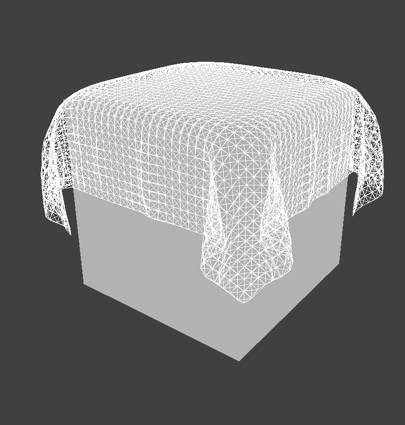

In this project, we simulate the properties and movement of cloth. Fundamentally, the cloth is modeled by a system of point masses and springs. By adjusting parameters including the spring constant, density, and damping, we are able to represent various material properties of the cloth. To enhance the realism of the cloth's movement and appearance, we also add support for collisions between the cloth and itself and other objects in the scene. As a result, the cloth is able to interact with other objects and itself in a realistic manner. Furthermore, we implement various shaders using GLSL (OpenGL Shading Language). By using vertex and fragment shaders, we create different shading effects including diffuse shading, Blinn-Phong shading, texture-mapping, displacement and bump mapping, and mirror-like environment-mapped reflections. In addition, we implement several additional features: cube collision objects, wind simulation, adjustable collision objects, a rainbow mirror shader, and a screenshot hotkey.
To model the cloth, we use a system of point masses and springs.
|
Figure 1: closeup view of pinned2.json with all constraints enabled |
Cloth::buildGrid initializes a grid of masses and establishes springs between them to simulate the behavior of the cloth model. To create the grid, we generate num_width_points by num_height_points point masses using a nested loop. For each point, we calculate the position vector v. If the orientation of the cloth is horizontal, the $y$-coordinate is set to 1, and the $x$ and $z$ coordinates vary. If vertical, the $z$-coordinate is set to a small random offset between -1/1000 and 1/1000, while the $x$ and $y$ coordinates vary. This random offset is calculated from the rand() function which returns a random value between 0 and RAND_MAX. By dividing by RAND_MAX we get a $[0,1]$ floating point value, which can then be scaled up to $[0, 2/1000]$ by dividing by 500. To get the final range $[-1/1000, 1/1000]$ we then subtract 1/1000. This results in a grid of point masses spanning the cloth's dimensions. point_masses stores all the point masses in row-major order with the point's position and whether it is pinned. A point mass is defined as pinned if its $(x, y)$ position (defined in the code as $(w, h)$) is contained within the pinned array.
Once the point masses have been generated, we connect each point mass and adjacent point masses with springs. For each point mass, springs are created to its left and above it (for structural), diagonally upper-left and upper-right (for shearing), as well as to the point mass two spaces away to its left and two spaces above it (for bending).
With this system of point masses and springs, we see this flat cloth wireframe below.
|
Figure 2: pinned2.json with without shearing |
Figure 2: pinned2.json with shearing |
Figure 3: pinned2.json with all constraints enabled |
To speed up execution of this function, we use a single nested loop for initialization of both point masses and springs. This is made possible by the reserve(int capacity) function, which expands a std::vector to have a capacity equal to the capacity value passed. This means the vector is guaranteed to not resize until that capacity is reached, which is important because we want to ensure that point masses remain at contiguous places in memory for spring initialization. This is because, for each point mass we create multiple springs which connect back to previously created point masses. If these point masses were to not be at contiguous memory locations, we could not use pointer arithmetic to get a point mass at a previously filled index in point_masses.
Task 1: Compute total force acting on each point mass
The function Cloth::simulate runs one timestep of time length delta_t in the simulation, applying the accelerations uniformly to all point masses in the cloth.
First, we calculated the total force acting on each point mass. The external forces, such as gravity, uniformly affect the cloth. For this function, they are stored in the parameter external_accelerations. Following Newton's second law $F = ma$, we took the sum of the external accelerations and multiplied it by the mass, resulting in the total force. This external force was then applied to every point mass by setting the forces vector on each.
Next, we implemented the spring correction forces. For each spring in the cloth, if the constraints were enabled, we set the forces of the two masses on its ends according to Hooke's law:
$$F_s = k_s * (|| p_a - p_b|| - l)$$
- $k_s$: spring constant. Because the bending constraint is weaker than shearing and structural constraints, $k_s$ is multiplied by a small constant if the spring type is bending
- $p_a$, $p_b$: positions of the two masses
- $l$: the spring's rest length
To properly apply this force, the spring correction force is added to one point mass and subtracted from the other. Which one is picked is somewhat arbitrary.
In code, the spring stores the parameters required to calculate the spring correction forces. This includes the positions of the two point masses which the spring connects (pm_a and pm_b) as well as the rest length (rest_length).
Notably, we only want to apply these spring correction forces if the spring type being applied is enabled. To do this we check the ClothParameters passed to simulate(...) for each spring that is applied, and cross-check that the spring being applied is the same type of spring that is enabled.
Task 2: Use Verlet integration to compute new point mass positions
To compute the new positions of each point mass using Verlet integration, we utilize the forces acting on each point mass at the current time step.
For each point mass that is not pinned, Verlet integration calculates the point mass's new position $x_{t + dt}$ at timestep $t + dt$ using the following equation:
$$x_{t + dt} = x_t + (1 - d) \cdot (x_t - x_{t-dt}) + a_t * dt^2$$
- $x_t$: current position
- $d$: damping term between 0 and 1 to help simulate loss of energy due to factors such as friction and heat loss
- $a_t$: current total acceleration from all forces
- $dt$: delta_t
Notably, we want to apply the acceleration corresponding to all forces which each point mass is experiencing individually. As such, we re-acquire the force on the point mass from the forces variable and divide by the provided mass to return the acceleration. This acceleration will be different from the external accelerations passed to the simulate(...) function.
Task 3: Constrain position updates
To prevent strings from being excessively deformed during each timestep, we apply a constraint based on the SIGGRAPH 1995 Provot paper.
For a given step of the simulation, the length of each spring cannot extend past 10% of its rest_length . If a change in position in the point masses would make the length surpass this limit, then the positions are corrected by the following amount:
$$c = (|| p_a - p_b|| - l \cdot 1.1) \cdot \frac{ p_a - p_b}{|| p_a - p_b||} $$
To apply the correct, we take into account multiple cases:
- If only one of the point masses are pinned, then adjust the position of the other by $c$.
- If neither point mass is pinned, then adjust both positions by $c / 2$.
- If both are pinned, then do nothing.
Our implementation of this function stores the vector connecting the positions of both point masses as diff, then stores the norm of that vector as dist. This enables us to reuse the dist both in checking for an overextended spring (i.e. the conditional) and in calculating a correction vector. This correction vector accounts for the spring length exceeding the maximum of 10% per timestep in the direction of the spring (i.e. between the point masses).
With default settings, we can achieve the following result from pinned4.json in a resting state.
|
Figure 4: pinned4.json wireframe |
Figure 5: pinned4.json with normal shading |
Figure 6: pinned4.json with normal shading |
Experimenting with Parameters
The movement of the cloth is defined by the parameters $k_s$ (spring constant), density, and damping. By adjusting each of these parameters, we can simulate different types of cloth.
The default settings are as follows:
- $k_s = 5000 N/m$
- density = $15 g/cm^2$
- damping = $0.2\%$
While maintaining the default density and damping, we first experiment with the spring constant by setting it at $5000 N/m$, $500 N/m$, and $50 N/m$.
The default spring constant is $5000 N/m$. Due to the strength of the spring constant, the cloth falls smoothly and the surface remains relatively flat.
|
Figure 7: wireframe of pinned2.json with $k_s = 5000 N/m$ |
Figure 8: pinned2.json with $k_s = 5000 N/m$ with normal shading |
As $k_s$ decreases, the cloth bends and is warped more easily. The area between the two pinned corners is much looser.
|
Figure 9: wireframe of pinned2.json with $k_s = 500 N/m$ |
Figure 10: pinned2.json with $k_s = 500 N/m$ with normal shading |
|
Figure 11: wireframe of pinned2.json with $k_s = 50 N/m$ |
 Figure 12: pinned2.json with $k_s = 50 N/m$ with normal shading |
To observe the effect of density, we maintain the default $k_s$ and damping and set density to $15 g/cm^2$, $150 g/cm^2$, and $1500 g/cm^2$.
|
Figure 13: wireframe of pinned2.json with density $ = 15 g/cm^2$ |
Figure 14: pinned2.json with density $ = 15 g/cm^2$ with normal shading |
|
Figure 15: wireframe of pinned2.json with density $ = 150 g/cm^2$ |
Figure 16: pinned2.json with density $ = 150 g/cm^2$ with normal shading |
|
Figure 17: wireframe of pinned2.json with density $ = 1500 g/cm^2$ |
 Figure 18: pinned2.json with density $ = 1500 g/cm^2$ with normal shading |
As density increases, the cloth ripples more. This effect occurs because at higher density, the cloth has more mass, resulting in more forces accumulated at each point mass. Consequently, more forces weigh on the cloth, pulling it downward and causing more wrinkles. Thus, increasing density has an effect similar to decreasing $k_s$.
Finally, experimenting with damping, we observe the cloth at damping levels $0%$, $0.2%$, and $1%$.
|
Figure 19: wireframe of pinned2.json with dampling $ = 0\%$ |
Figure 20: pinned2.json with density $ = 0\%$ with normal shading |
|
Figure 21: wireframe of pinned2.json with dampling $ = 0.2\%$ |
Figure 22: pinned2.json with density $ = 0.2\%$ with normal shading |
|
Figure 23: wireframe of pinned2.json with dampling $ = 1\%$ |
Figure 24: pinned2.json with density $ = 1\%$ with normal shading |
With $0\%$ damping (the lowest setting), the cloth falls quickly and swings back and forth, moving constantly, as if blown by strong winds. This occurs because there is no loss of energy due to friction or other forces, so the velocity is constant, never decreasing. On the other hand, with $1\%$ damping (the highest setting), the cloth falls gradually and is very stiff, standing motionless at the final position. This slower movement is caused by more damping, mitigating the effects of forces, such as gravity, reducing the rapid movement of point masses. Consequently, more of the energy applied to the cloth is dissipated, leading to a more controlled motion.
On the other hand, with $1%$ damping (the highest setting), the cloth falls gradually and is very stiff, standing motionless at the final position. This slower movement is caused by more damping, mitigating the effects of forces, such as gravity, reducing the rapid movement of point masses. Consequently, more of the energy applied to the cloth is dissipated, leading to a more controlled motion.
To allow cloths to interact with other objects in the scene realistically, we add support for cloth collision with spheres and planes (or as seen in Part 6, other collision objects).
Task 1: Handling collisions with spheres
To handle collisions with spheres we implement Sphere::collide. Given a point mass pm, if it would intersect the sphere, we adjust its position to be on the surface of the sphere.
To determine an intersection, we check whether the position of pm falls within 1 radius from the origin. If so, we compute the tangent point by extending the line between the sphere's origin and the point mass position to the sphere's surface. Then, we compute the correction vector needed to reach the tangent point from the last_position of pm. We then update the point mass's position by applying the correction vector scaled down by the friction coefficient. This adjustment ensures that the point mass stays just outside the sphere's surface.
Finally, we update Cloth::simulate to account for potential collisions between each point mass and object by calling the collide() function on each CollisionObject.
As the cloth falls, it wraps around the sphere and arrives at the final resting state shown below.
|
Figure 25: sphere.json with default settings in the final resting state |
When we adjust the spring constant $k_s$, we see the properties of the cloth change. As $k_s$ increases, the cloth stiffens. Because it is less flexible, it wraps around the sphere less, and there are fewer folds. This occurs because a higher spring constant makes the cloth stronger and able to hold its shape. In contrast, as $k_s$ decreases, the cloth loosens, wrapping around the sphere more closely, and there are more wrinkles.
|
Figure 26: sphere.json with $k_s = 500 N/m$ with normal shading |
Figure 27: sphere.json with $k_s = 5000 N/m$ with normal shading |
Figure 28: sphere.json with $k_s = 50000 N/m$ with normal shading |
Task 2: Handling collisions with planes
Similar to spheres, we handle collisions with planes by implementing Plane::collide . Given a point mass pm, if it would intersect the plane, we adjust its position to be on the surface of the plane.
We first check whether the point mass moved from one side of the plane to the other in the last time step. To do this, we compute the projection between the designated point on the plane and the point mass’s position, in the direction of the plane’s normal. In effect, this computes the distance between the closest point on the plane to the point mass. This operation is performed twice; once for the upcoming (next) position of the point mass, and once more for the previous (last) position of the point mass.
If the sign of both projections are complementary, this means the point mass crossed over the plane. In this case, we calculate the tangent point, the point where the point mass would hit the plane if it traveled in a straight line (again utilizing the projection). We then compute a correction vector to apply to the point mass's last_position to reach the surface, offset by a small constant SURFACE_OFFSET. Lastly, we reassign the point mass's position to be the sum of its last_position and the correction vector scaled down by a friction coefficient. This adjustment ensures that the point mass stays just above the plane's surface and loses some energy due to friction (i.e. stops eventually in the absence of additional external forces).
After having implemented these changes, we can see that as the cloth falls, it stops when it collides with the plane, lying on its surface. Note there are some visible artifacts, which are a result of projecting, rotating, and then taking a screenshot of the viewport. The plane rests completely above the substrate without physics-based artifacts.
|
Figure 29: wireframe of plane.json |
Up until now, the cloth is able to handle collisions with other objects. However, when it collides with itself, it clips through itself and often falls through the substrate.
To solve this issue, we implement self-collision with spatial hashing. Spatial-hashing maps floats to candidates (vectors of pointers to point masses). Each float represents a unique numbered box volume in the scene and the candidates contains all of the point masses that are in that 3D box volume. For each point mass, we query the hash table for all the point masses it shares a 3D volume with, and then apply a repulsive collision force if any pair is too close to each other.
Task 1: Cloth::hash_position
Given a 3D position, Cloth::hash_position returns its hash representing the 3D box volume to which it belongs. We first partition the 3D space into 3D boxes with dimensions $w \cdot h \cdot t$ such that
- w = 3 * width / num_width_points
- h = 3 * height / num_height_points
- t = max(w, h)
Once the boxes have been defined, calculate the $x$,$y$,$z$ indices of the box the point is in.
- boxX = floor(pos.x / w)
- boxY = floor(pos.y / h)
- boxZ = floor(pos.z / t)
This produces the 3D coordinates boxX, boxY, boxZ. We then convert it to a 1D value taking into account the number of boxes in the $X$, $Y$, and $Z$ axes.
Task 2: Cloth::build_spatial_map
Now that we have a hash function for each position, we use it to build the spatial map. For each point mass, we compute the hash of its position. With this hash as the key, we insert the point mass into the vector of point masses, storing the vector as the value in the map. If this vector does not yet exist, we first initialize it before inserting the point mass. By the end, the map should be populated with the 3D box volumes and their corresponding point masses that they contain.
Task 3: Cloth::self_collide
Cloth::self_collide handles the self-collisions for a given point mass pm . First, we look up potential candidates for collision. We hash the point mass's position, and then, using the hash table, we retrieve the vector of point masses that have the same hash.
Then, for each candidate point mass in the vector, we check whether they are within $2 \cdot thickness$ distance apart. If so, we compute a correction vector to apply to pm. The final correction vector accumulates all the pairwise correction vectors. We take the average, subtract simulation_steps, and then apply this correction to the position of pm.
Once we have finished ::build_spatial_map and Cloth::self_collide, we update Cloth::simulate to construct the spatial map and then handle self-collisions for each point mass.
Having completed this, we can see the process of the cloth falling and colliding with itself in a realistic manner without clipping malfunctions.
|
Figure 30: selfCollision.json with cloth in the initial state |
Figure 31: selfCollision.json with cloth beginning to fall |
Figure 32: selfCollision.json in the middle of falling |
Figure 33: selfCollision.json almost finished falling |
Figure 34: selfCollision.json with the cloth in the final resting position |
Experimenting with Parameters
When we vary the $k_s$ and density of the cloth, its properties change, affecting its movement.
As $k_s$ increases, the cloth is more rigid, with fewer folds. When it falls, it folds on itself, forming large, distinct layers as shown below. Because higher $k_s$ causes the strings to be stronger, more force is required to compress or stretch the springs from their rest length, forming fewer folds and wrinkles in the simulation.
|
Figure 35: selfCollision.json with $k_s = 100000 N/m$ in the middle of falling. |
Figure 36: selfCollision.json with $k_s = 100000 N/m$ in the final resting position |
On the other hand, as $k_s$ decreases, many ripples form when the cloth falls on itself. In its resting state, the wrinkles and folds have distorted the shape of the cloth.
|
Figure 37: selfCollision.json with $k_s = 1 N/m$ in the middle of falling. |
Figure 38: selfCollision.json with $k_s = 1 N/m$ in the final resting position |
Inversely, as density increases, the cloth wrinkles more, forming smaller wrinkles. This occurs due to higher density, meaning higher mass, more force acting on the cloth, and thus, more self-collisions. Therefore, at lower densities, the cloth has less mass, meaning less force weighing on it. As a result, there are fewer self-collisions and fewer folds.
|
Figure 39: selfCollision.json with density $ = 100000 g/cm^2$ in the middle of falling. |
Figure 40: selfCollision.json with density $ = 100000 g/cm^2$ in the final resting position |
|
Figure 41: selfCollision.json with density $ = 1 g/cm^2$ in the middle of falling. |
Figure 42: selfCollision.json with density $ = 1 g/cm^2$ in the final resting position |
A shader is a program written in a specialized programming language such as GLSL (OpenGL Shading Language) that runs on the GPU rather than CPU to accelerate rendering processes. In this project, we use vertex and fragment shaders which work together to create lighting and material effects. Vertex shaders process vertices of objects, applying transforms to them; they output the transformed vertex in addition to other data for use in the fragment shader. Fragment shaders process the individual pixels or samples of pixels (fragments) produced from rasterizing geometric primitives. Given geometric attributes of the fragment calculated by the vertex shader, they output its final color based on the material properties and lighting. The combination of the vertex and fragment shaders allow the GPU to efficiently process geometric and shading calculations to render realistic lighting and material effects in real time.
Task 1: Diffuse Shading
To implement diffuse shading, we create a fragment shader. The main method of Diffuse.frag outputs the color of the surface according to the Lambertian (diffuse) lighting formula:
$$L_d = k_d (1/r^2) max(0, n \cdot l)$$
- $L_d = $ diffusely reflected light
- $k_d = $ diffuse coefficient
- $r = $ radius from the light position to the vertex
- $n = $ normal vector of the fragment
- $l = $ direction of the incoming light at the point being shaded
Following this equation, we first calculate the radius $r$, the distance from the light source to the vertex. The intensity of the light reaching the fragment is $1/r^2$. To compute the Lambertian shading component, we normalize the normal vector of the fragment and the radius, and then take the max between 0 and the dot product of the vectors. Finally, we combine the intensity and Lambertian shading factor to determine the final color of the fragment, which is assigned to out_color. Since the out_color has an alpha channel but we do not use the alpha channel in this shading mode, we set it to 1 (maximum) arbitrarily.
Having completed this method, we see the resulting realistic diffuse shading of the cloth.
|
Figure 43: sphere.json with diffuse shading |
Task 2: Blinn-Phong Shading
The Blinn-Phong shading model calculates the color of a pixel based on diffuse reflection, specular reflection, and ambient reflection. Diffuse reflection represents the uniform scattering of light when it strikes a surface, allowing Blinn-Phong shading to account for the angle between this point of intersection and the light source. Furthermore, we are able to incorporate the perspective and viewing angle into the shading by using specular reflection. Specular reflection refers to highlights on surfaces when light reflects off them; the perception of specular reflection depends on the angle between the viewer's direction and the direction of reflection. In addition, ambient lighting, indirect illumination scattering throughout the environment, makes the object more realistic and contributes to the overall brightness of the scene.
Building off the diffuse fragment shader in Part 5 Task 1, we add specular and ambient shading, using the Blinn-Phong shading equation:
$$L = k_a I_a + k_d (I / r^2) max(0, n \cdot l) + k_s (I/ r^2) max(0, n \cdot h)^p$$
- $L = $ total light reflected by the surface
- $k_a = $ ambient reflection coefficient, determining the contribution of ambient light to the surface's color
- $I_a = $ intensity of the ambient light
- $k_d = $diffuse reflection coefficient, determining the amount of light diffusely reflected by the surface
- $I = $intensity of the light source
- $r = $ distance between the light source and the surface
- $n = $ normalized surface normal
- $l = $ normalized vector pointing from the vertex to the light source
- $k_s = $ specular reflection coefficient, determining the amount of light specularly reflected by the surface
- $h = $ normalized half vector between the viewer's direction and the light direction
- $p = $ specular exponent, determining the size and sharpness of the specular highlight
To match the images in the spec as closely as possible, we settled on the following constant values: $k_s=0.5$, $\rho=100$, $k_a=0.1$, $k_d=1$.
 Figure 44: sphere.json with Blinn-Phong shading |
Figure 45: sphere.json with only ambient shading |
Figure 46: sphere.json with only diffuse shading |
Figure 47: sphere.json with only specular shading |
Task 3: Texture Mapping
To implement texture mapping, we modify the The main method of Texture.frag to set out_color to the value at the corresponding texture space coordinate. We use the built-in function texture(sampler2D tex, vec2 uv) to sample uniformly from the texture map u_texture_1 at texture space coordinate v_uv.
|
Figure 48: sphere.json with texture-mapping |
For our custom texture, we cropped an image to a square then resized it to 512x512 pixels (the same as the existing texture files). This image is cows.jpeg which is a custom edited image of passengers on a train overlaid by cow heads. The impetus for making this image was largely out of curiosity for creating something random. The images below show the sphere with this texture map applied, as well as the raw texture map.
|
Figure 49: sphere.json with custom texture-mapping |
Figure 50: Our custom texture |
Task 4: Displacement and Bump Mapping
In addition to textures and lighting, we can also add height details to a mesh. There are two main ways to accomplish this, each with slightly different results. Bump mapping uses the normal vectors for each object to provide an illusion of depth, while displacement mapping modifies the geometry of the underlying mesh to add these height details.
As with before, for bump mapping we create a fragment shaderBump.frag. In this shader, we mainly utilize the tangent-bitangent-normal (TBN) matrix, which is $TBN = [t b n]$ where $b = n \times t$, $t$ is the tangent vector, and $n$ is the normal vector. We then compute a differential change in the $u$ and $v$ texture coordinates and scale by some constant factor. Notably, the $(u, v)$ coordinates are encoded into “heights” by texture() - since we only provide the illusion of height, these “heights” are really colors. The differential changes in $(u, v)$ coordinate colors are then mapped to a normal vector via $n_o=(-dU, -dV, 1)$ and the resulting normal vector is $n_d=TBN \cdot n_o$.
From this resulting normal vector, we perform Blinn-Phong shading as in the previous subpart but use this result instead of the normal vector provided by the model/texture. The result of this transformation is as seen below - first on the default texture and then on a custom texture (the same as task 3).
|
Figure 51: sphere.json with bump mapping |
Figure 52: sphere.json with bump mapping (only sphere) |
Figure 53: sphere.json with custom bump mapping |
Figure 54: sphere.json with custom bump mapping (only sphere) |
For displacement mapping, we perform bump mapping in a duplicated fragment shader Displacement.frag. In addition, we displace each vertex position in the mesh by some amount in the direction of the normal vector. This amount is the product of the height scaling constant $k_h$ and the height from the texture map (retrieved with the builtin function texture()).
Our implementation is careful to use the v_position vector position instead of the input position vectors stored in in_position. This allows the normal-based height displacement to be applied to the position that is rendered to the screen by OpenGL (gl_Position).
The result of displacement mapping is shown below on a custom texture (the same as was used for task 3).
|
Figure 55: sphere.json with displacement mapping |
Figure 56: sphere.json with displacement mapping (only sphere) |
We can then modulate the -a and -o parameters passed to the program. The images below show (a) $a=16, o=16$ and (b) $a=128, o=128$. Notably, (a) is much smoother than (b). This is likely because with a more coarse mesh, the output displacement on each point will affect the overall appearance more (as there would be fewer uniform points. Conceptually, this is similar to the law of large numbers where with small sample sizes the outliers stand out/affect the dataset more than with large sample sizes.
|
Figure 57: sphere.json with displacement mapping with $a = 16$ and with $o = 16$ |
 Figure 58: sphere.json with displacement mapping with $a = 128$ and with $o = 128$ |
Task 5: Environment-mapped Reflections
Environment-mapped reflections create a mirror finish which reflects from the camera onto a surface and out into an environment map. In this case, our environment map is a cubemap texture image which can be sampled again using the builtin texture() function.
First, compute the outgoing radiance $w_o$:
$$w_o=v_{camera} - v$$
Then, reflect the radiance to the incoming radiance $w_i$:
$$w_i=-w_o + (2w_0 \cdot n * n)$$
This incoming radiance $w_i$ is then used to sample the cubemap, and the following images are produced:
|
Figure 59: sphere.json with environment-mapped reflections |
Figure 60: sphere.json with environment-mapped reflections with the cloth above the sphere |
Figure 61: sphere.json with environment-mapped reflections (only sphere) |
Extra Credit: Rainbow Mirror
We chose to implement our own shader, which we have dubbed “Rainbow Mirror”. This is because it combines the existing mirror shader with a rainbow effect to create a mirror that is also chromatically varying. The effect is shown in the image below.
|
Figure 62: sphere.json with rainbow mirror shading |
To implement this, we modified Custom.frag to perform our fragment shading and did not change Custom.vert. In this file, we copy in the mirror implementation and multiply that by some constant less than one (here 0.5). We then take our rainbow effect and multiply that by another constant less than one, with the added condition that the two constants should sum to one. This effectively averages two different shaders together to get half of each shader combined. If we added the shaders, we may have clipping from colors over the maximum value, or at best incorrect colors.
The rainbow effect is achieved by multiplying u_model by v_position. This creates an effective depth heatmap which appears chromatic because it spans the whole model (i.e. u_model).
Cube Collision Object
As part of this project, we implement collisions for our cloth with spheres and planes. These are called collision objects (because the cloth collides into them) and can be extended into other shapes. In this extra credit section, we have implemented a cube collision object.
To accomplish this, we started by adding a Cube class to the collision folder (where the sphere and plane classes reside). To be a collision object, this new class must extend CollisionObject and as such implement the void methods collide() and render().
In collide(), we determine if the position of a given point mass will be within the cube on its next time step (i.e. its position is within the cube). To check this, we find the minimum and maximum $x$, $y$, and $z$ coordinates of the cube. These are taken from the class’s two data variables, a vector representing the center point of the cube center and a side length edge. Note that each corner is a projected distance edge / 2 away from the center (on any given single axis). These minimum and maximum coordinates are then checked against the position of the point mass. If the point mass will be inside the cube, we stop its movement at its current position (last_position).
In render() we have to effectively rasterize our cube into many triangles for OpenGL to render. This involves finding the position of each corner of the cube (again using center and edge / 2) and drawing a path between them to triangularize each face of the cube sequentially. Each position in this sequence is appended as a column in a MatrixXf (variable-size matrix), then “uploaded” to the shader as the in_position matrix. The shader then draws the scene using the type flag GL_TRIANGLE_STRIP which draws a continuous strip of triangles (instead of individual triangles, as GL_TRIANGLES would).
Now to render a scene with a cube, we need to create a scene with a cube in it. Since we want a similar cloth setup to the sphere collision object, we duplicate that file and modify it to be of name cube with center and edge as properties.
To parse this JSON, in main.cpp we add a “cube” (aliased as CUBE) to the VALID_KEYS of collision objects. In loadObjectsFromFile() we find the parameters in the JSON file and translate them to C++ primitives, then into the Cube object.
Before this class can be compiled, we also have to add its header file to the CMake configuration file located in the src folder.
The result of this code is the images below. Notice the cloth falling onto the top surface of the cube and loosely wrapping around the sides, as would be realistically expected.
|
Figure 63: cube.json with normal shading |

Figure 64: wireframe of cube.json |
Adjustable Collision Objects
The size and location of collision objects (such as spheres and planes) is set by JSON files before the program starts. In the skeleton provided, it is not possible to change these sizes or locations at runtime. To fix this, we implemented adjustable collision objects that can be modified during runtime from the GUI.
Each time a scene with collision objects is initialized, we create a set of GUI objects in a new panel called “Collision objects”. Each object contains a text input field which controls a scalar value (which often is a component of a vector). As shown below, this is implemented for all three collision objects: sphere, plane, and cube.
|
Figure 65: sphere.json |
Figure 66: plane.json |
Figure 67: cube.json |
To implement this, we add a new Window with a GridLayout to the screen hierarchy. We then add FloatBoxes to each in rows. These are the input boxes and are initialized to a certain value. When modified, they call a callback function specified by setCallback. We pass in the CollisionObject to this callback and a field is modified. For existing collision objects, the visibility of some fields did have to be changed to enable this functionality.
Notably, we cannot access object-specific fields such as the sphere’s center through a CollisionObject. To solve this, we use dynamic_cast to attempt to cast to a superclass. If unsuccessful (i.e. the variable is NULL) we continue to the next possible collision object (and repeat).
Wind Simulation
To add a wind effect to our cloth, we first thought about how we could approach this issue. It would be possible to simulate wind as a particle/gas and perform a full fluid dynamics simulation on the air. However, that would be computationally expensive. As such, we decided to perform an approximation of wind instead. After trying several ideas, we devised an idea to add some forces to the spring correction forces, based on the hint in the spec that wind is a spatially varying force.
To implement this, we add a rand() amount of force to each point. This means we add some force to each point, and it varies in space. Given no other forces, this should in time move the cloth with the same net force. However, given a collision object the edges furthest away from the object will be pushed away and curl away first, leading to a fairly realistic wind effect estimation. To make the wind direction controllable, we can add to each of the three force components separately, scaled by different constants.
This produces the wind effect shown below. The wind direction in the left image is from the camera, while the wind direction in the right image is from underneath the cube.
|
Figure 68: cube.json with wind along the $y$-axis |
Figure 69: cube.json with wind along the $z$-axis |
These constants could be set in code, however to add customizability we also implemented a GUI feature which allows the user to set a 0-100% wind speed. This was tuned such that a 50-75% wind speed could pull the cloth away from any object tested, and 100% still moves the object in human speed (i.e. on the second scale). To minimize computation, there is also an enable button. The implementation of these GUI features is almost identical to the “Adjustable Collision Objects” extra credit section above, so refer to that section for GUI details.
|
Figure 70: GUI for the wind feature |
Screenshot Hotkey
A feature of Homework 1 which was very useful in completing the project (and writing the documentation) was a screenshot hotkey feature which could be quickly pressed to take a uniform and high-quality screenshot of the whole image. Although not an enumerated extra credit portion, we felt this section would be useful to outline as it represents an improvement made to the project. Note that much of the code is taken from homework 1, though improved through modification.
To take a screenshot of a window, we first have to retrieve all the pixels being displayed on the desired window. OpenGL has a function glReadPixels which does exactly this, for some width and height number of pixels (rectangularly). For the current window, these dimensions can be retrieved from the GL_VIEWPORT integer parameter via glGetIntegerv. This reads into 4-element GLint (alias int) which holds the current x position, current y position, width, and height. From glReadPixels we read into a vector of bytes (alias unsigned char) which is three times the number of pixels. This is to hold a red, green, and blue channel value for each pixel (i.e. read with format GL_RGB.
Intuition tells us that this format should be fine and that we can write this to a png or similar. However, there are two issues with this. Firstly, the pixels are upside down due to convention with OpenGL. As such, we must flip the image horizontally. Secondly, lodepng (the png encoding library used) expects an RGBA (the A being the alpha channel) value, which would be four bytes per pixel. As such, we memcpy from the pixels read by glReadPixelsinto the first three elements of each four-element group. The fourth is 255 (maximum) by default at initialization, which means all images are opaque. This has the beneficial side effect of removing transparent backgrounds. With some arithmetic, these two can be combined into one set of copying operations.
As a side note, we also have to set the GL_UNPACK_ALIGNMENT and GL_PACK_ALIGNMENT to 1 (instead of the default of 4). This is because we want to read RGB values from the screen buffer, and if we are aligned to 4 bytes that will not function as expected. These are returned to a value of 4 after the function returns. To avoid memory leaks we also clear all intermediate vectors.
By putting a function call to this screenshot function in keyCallbackEvent, we can trigger a screenshot on a keystroke (we chose “s” or “S” for “save” since “p” was already taken).